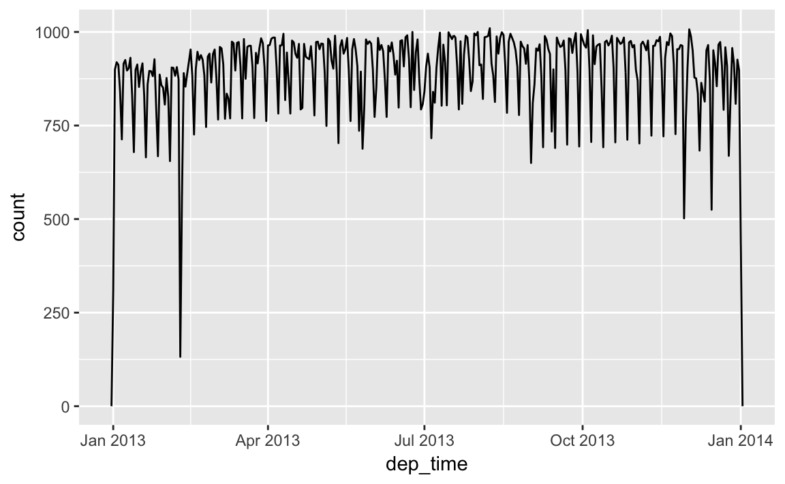
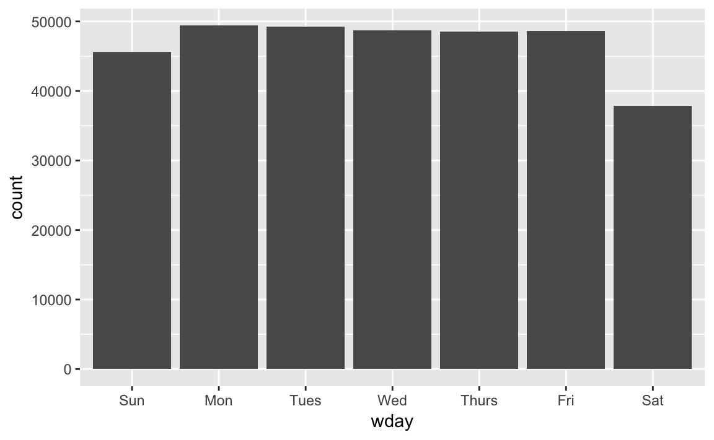
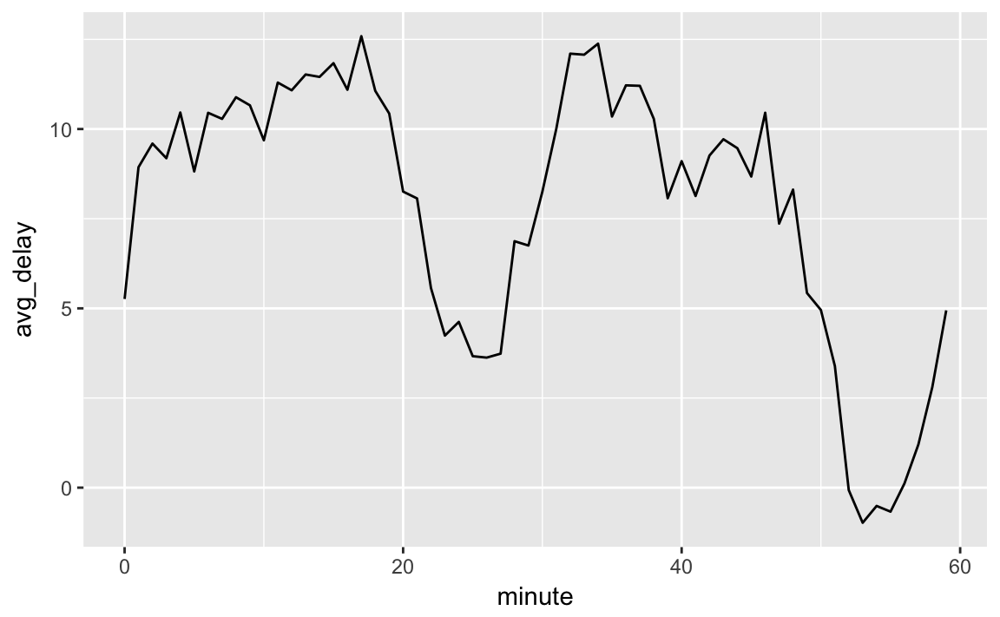

12 Dates and Times
lubridate
today,nowymdetc.,ymd_hmsetc.make_datetime,make_dateas_datetime,as_dateyear,month,mday,yday,wdayandyear<-floor_date,round_date,ceiling_dateupdateas.duration, duration functions (ddays, etc)- period functions (
days,months, etc) - interval creation with
%--% with_tz,force_tz- hms package has times
- Ideas for applications: CDB90 data, COW war start end and duration
- Read more on time-zones: https://en.wikipedia.org/wiki/Time_zone
- Computerphile The Problem with Time & Timezones - Computerphile
- The history of the tz database are themselves interesting: https://en.wikipedia.org/wiki/Tz_database
I think time-zones are likely a point for social science research in and of themselves. Policy choices. Coordination. Regression discontinuity designs. Just sayin…
12.1 Prerequisite
library(tidyverse)
library(lubridate)
library(nycflights13)12.2 Creating date/times
NOTE %/% is integer division, divide and throw away the remainder. %% calculates the modulus (remainder of division). For example to test for an even number: x %% 2 == 0, or odd x %% 2 == 1. To get the thousands value of a number x %/% 1000.
make_datetime_100 <- function(year, month, day, time) {
make_datetime(year, month, day, time %/% 100, time %% 100)
}
flights_dt <- flights %>%
filter(!is.na(dep_time), !is.na(arr_time)) %>%
mutate(
dep_time = make_datetime_100(year, month, day, dep_time),
arr_time = make_datetime_100(year, month, day, arr_time),
sched_dep_time = make_datetime_100(year, month, day, sched_dep_time),
sched_arr_time = make_datetime_100(year, month, day, sched_arr_time)
) %>%
select(origin, dest, ends_with("delay"), ends_with("time"))
flights_dt %>% head
#> # A tibble: 6 × 9
#> origin dest dep_delay arr_delay dep_time sched_dep_time
#> <chr> <chr> <dbl> <dbl> <dttm> <dttm>
#> 1 EWR IAH 2 11 2013-01-01 05:17:00 2013-01-01 05:15:00
#> 2 LGA IAH 4 20 2013-01-01 05:33:00 2013-01-01 05:29:00
#> 3 JFK MIA 2 33 2013-01-01 05:42:00 2013-01-01 05:40:00
#> 4 JFK BQN -1 -18 2013-01-01 05:44:00 2013-01-01 05:45:00
#> 5 LGA ATL -6 -25 2013-01-01 05:54:00 2013-01-01 06:00:00
#> 6 EWR ORD -4 12 2013-01-01 05:54:00 2013-01-01 05:58:00
#> # ... with 3 more variables: arr_time <dttm>, sched_arr_time <dttm>,
#> # air_time <dbl>Times are often stored as integers since a reference time, called an epoch. The most epoch is the UNIX (or POSIX) Epoch of January 1st, 1970 00:00:00. So, interally, times are stored as the number of days, seconds, or milliseconds, etc. since the 1970-01-01 00:00:00.000.
Calculate dates and datetimes from number of seconds (as_datetime) or days (as_date) from Unix epoch.
as_datetime(60 * 60 * 10)
#> [1] "1970-01-01 10:00:00 UTC"as_date(365 * 10 + 2)
#> [1] "1980-01-01"12.2.1 Exercises
- What happens if you parse a string that contains invalid dates?
ret <- ymd(c("2010-10-10", "bananas"))
#> Warning: 1 failed to parse.
print(class(ret))
#> [1] "Date"
ret
#> [1] "2010-10-10" NAIt produces an NA and an warning message.
- What does the tzone argument to
today()do? Why is it important?
It determines the time-zone of the date. Since different time-zones can have different dates, the value of today() can vary depending on the time-zone specified.
- Use the appropriate lubridate function to parse each of the following dates:
d1 <- "January 1, 2010"
mdy(d1)
#> [1] "2010-01-01"
d2 <- "2015-Mar-07"
ymd(d2)
#> [1] "2015-03-07"
d3 <- "06-Jun-2017"
dmy(d3)
#> [1] "2017-06-06"
d4 <- c("August 19 (2015)", "July 1 (2015)")
mdy(d4)
#> [1] "2015-08-19" "2015-07-01"
d5 <- "12/30/14" # Dec 30, 2014
mdy(d5)
#> [1] "2014-12-30"12.3 Date-Time Components
sched_dep <- flights_dt %>%
mutate(minute = minute(sched_dep_time)) %>%
group_by(minute) %>%
summarise(
avg_delay = mean(arr_delay, na.rm = TRUE),
n = n())Note The difference between rounded and unrounded dates provides the within period time.
(datetime <- ymd_hms("2016-07-08 12:34:56"))
#> [1] "2016-07-08 12:34:56 UTC"
year(datetime) <- 2020
datetime
#> [1] "2020-07-08 12:34:56 UTC"
month(datetime) <- 01
datetime
#> [1] "2020-01-08 12:34:56 UTC"
hour(datetime) <- hour(datetime) + 1
datetime
#> [1] "2020-01-08 13:34:56 UTC"12.3.1 Exercises
- How does the distribution of flight times within a day change over the course of the year?
Let’s try plotting this by month:
flights_dt %>%
mutate(time = hour(dep_time) * 100 + minute(dep_time),
mon = as.factor(month
(dep_time))) %>%
ggplot(aes(x = time, group = mon, color = mon)) +
geom_freqpoly(binwidth = 100)
This will look better if everything is normalized within groups. The reason that February is lower is that there are fewer days and thus fewer flights.
flights_dt %>%
mutate(time = hour(dep_time) * 100 + minute(dep_time),
mon = as.factor(month
(dep_time))) %>%
ggplot(aes(x = time, y = ..density.., group = mon, color = mon)) +
geom_freqpoly(binwidth = 100)
At least to me there doesn’t appear to much difference in within-day distribution over the year, but I maybe thinking about it incorrectly.
- Compare
dep_time,sched_dep_timeanddep_delay. Are they consistent? Explain your findings.
If they are consistent, then dep_time = sched_dep_time + dep_delay.
flights_dt %>%
mutate(dep_time_ = sched_dep_time + dep_delay * 60) %>%
filter(dep_time_ != dep_time) %>%
select(dep_time_, dep_time, sched_dep_time, dep_delay)
#> # A tibble: 1,205 × 4
#> dep_time_ dep_time sched_dep_time dep_delay
#> <dttm> <dttm> <dttm> <dbl>
#> 1 2013-01-02 08:48:00 2013-01-01 08:48:00 2013-01-01 18:35:00 853
#> 2 2013-01-03 00:42:00 2013-01-02 00:42:00 2013-01-02 23:59:00 43
#> 3 2013-01-03 01:26:00 2013-01-02 01:26:00 2013-01-02 22:50:00 156
#> 4 2013-01-04 00:32:00 2013-01-03 00:32:00 2013-01-03 23:59:00 33
#> 5 2013-01-04 00:50:00 2013-01-03 00:50:00 2013-01-03 21:45:00 185
#> 6 2013-01-04 02:35:00 2013-01-03 02:35:00 2013-01-03 23:59:00 156
#> # ... with 1,199 more rowsThere exist discrepencies. It looks like there are mistakes in the dates. These are flights in which the actual departure time is on the next day relative to the scheduled departure time. We forgot to account for this when creating the date-times. The code would have had to check if the departure time is less than the scheduled departure time. Alternatively, simply adding the delay time is more robust because it will automatically account for crossing into the next day.
- Compare
air_timewith the duration between the departure and arrival. Explain your findings.
flights_dt %>%
mutate(flight_duration = as.numeric(arr_time - dep_time),
air_time_mins = air_time,
diff = flight_duration - air_time_mins) %>%
select(origin, dest, flight_duration, air_time_mins, diff)
#> # A tibble: 328,063 × 5
#> origin dest flight_duration air_time_mins diff
#> <chr> <chr> <dbl> <dbl> <dbl>
#> 1 EWR IAH 193 227 -34
#> 2 LGA IAH 197 227 -30
#> 3 JFK MIA 221 160 61
#> 4 JFK BQN 260 183 77
#> 5 LGA ATL 138 116 22
#> 6 EWR ORD 106 150 -44
#> # ... with 3.281e+05 more rows- How does the average delay time change over the course of a day? Should you use
dep_timeorsched_dep_time? Why?
Use sched_dep_time because that is the relevant metric for someone scheduling a flight. Also, using dep_time will always bias delays to later in the day since delays will push flights later.
flights_dt %>%
mutate(sched_dep_hour = hour(sched_dep_time)) %>%
group_by(sched_dep_hour) %>%
summarise(dep_delay = mean(dep_delay)) %>%
ggplot(aes(y = dep_delay, x = sched_dep_hour)) +
geom_point() +
geom_smooth()
#> `geom_smooth()` using method = 'loess'
- On what day of the week should you leave if you want to minimise the chance of a delay?
Sunday has the lowest average departure delay time and the lowest average arrival delay time.
flights_dt %>%
mutate(dow = wday(sched_dep_time)) %>%
group_by(dow) %>%
summarise(dep_delay = mean(dep_delay),
arr_delay = mean(arr_delay, na.rm = TRUE))
#> # A tibble: 7 × 3
#> dow dep_delay arr_delay
#> <dbl> <dbl> <dbl>
#> 1 1 11.5 4.82
#> 2 2 14.7 9.65
#> 3 3 10.6 5.39
#> 4 4 11.7 7.05
#> 5 5 16.1 11.74
#> 6 6 14.7 9.07
#> # ... with 1 more rows- What makes the distribution of
diamonds$caratandflights$sched_dep_timesimilar?
ggplot(diamonds, aes(x = carat)) +
geom_density()
In both carat and sched_dep_time there are abnormally large numbers of values are at nice “human” numbers. In sched_dep_time it is at 00 and 30 minutes. In carats, it is at 0, 1/3, 1/2, 2/3,
ggplot(diamonds, aes(x = carat %% 1 * 100)) +
geom_histogram(binwidth = 1)
In scheduled departure times it is 00 and 30 minutes, and minutes ending in 0 and 5.
ggplot(flights_dt, aes(x = minute(sched_dep_time))) +
geom_histogram(binwidth = 1)
- Confirm my hypothesis that the early departures of flights in minutes 20-30 and 50-60 are caused by scheduled flights that leave early. Hint: create a binary variable that tells you whether or not a flight was delayed.
At the minute level, there doesn’t appear to be anything:
flights_dt %>%
mutate(early = dep_delay < 0,
minute = minute(sched_dep_time)) %>%
group_by(minute) %>%
summarise(early = mean(early)) %>%
ggplot(aes(x = minute, y = early)) +
geom_point()
But if grouped in 10 minute intervals, there is a higher proportion of early flights during those minutes.
flights_dt %>%
mutate(early = dep_delay < 0,
minute = minute(sched_dep_time) %% 10) %>%
group_by(minute) %>%
summarise(early = mean(early)) %>%
ggplot(aes(x = minute, y = early)) +
geom_point()
12.4 Time Spans
- duration: exact number of seconds
- period: human time periods - e.g. weeks, months
- interval: start and end points
12.4.1 Durations
No exercises
12.4.2 Periods
Define overnight when arr_time < dep_time (no flights > 24 hours):
flights_dt <- flights_dt %>%
mutate(
overnight = arr_time < dep_time,
arr_time = arr_time + days(overnight * 1),
sched_arr_time = sched_arr_time + days(overnight * 1)
)12.4.3 Intervals
NOTE This section seems less complete than the others. Refer to the lubridate vignette for more information.
12.4.4 Exercises
- Why is there
months()but nodmonths()?
There is no direct unambigous value of months in seconds:
- 31 days: Jan, Mar, May, Jul, Aug, Oct,
- 30 days: Apr, Jun, Sep, Nov, Dec
- 28 or 29 days: Feb
Though in the past, in the pre-computer era, for arithmetic convenience, bankers adopoted a 360 day year with 30 day months.
- Explain
days(overnight * 1)to someone who has just started learning R. How does it work?
overnight is equal to TRUE (1) or FALSE (0). So if it is an overnight flight, this becomes 1 day, and if not, then overnight = 0, and no days are added to the date.
- Create a vector of dates giving the first day of every month in 2015. Create a vector of dates giving the first day of every month in the current year.
A vector of the first day of the month for every month in 2015:
ymd("2015-01-01") + months(0:11)
#> [1] "2015-01-01" "2015-02-01" "2015-03-01" "2015-04-01" "2015-05-01"
#> [6] "2015-06-01" "2015-07-01" "2015-08-01" "2015-09-01" "2015-10-01"
#> [11] "2015-11-01" "2015-12-01"To get the vector of the first day of the month for this year, we first need to figure out what this year is, and get January 1st of it. I can do that by taking today() and truncating it to the year using floor_date:
floor_date(today(), unit = "year") + months(0:11)
#> [1] "2017-01-01" "2017-02-01" "2017-03-01" "2017-04-01" "2017-05-01"
#> [6] "2017-06-01" "2017-07-01" "2017-08-01" "2017-09-01" "2017-10-01"
#> [11] "2017-11-01" "2017-12-01"- Write a function that given your birthday (as a date), returns how old you are in years.
age <- function(bday) {
(bday %--% today()) %/% years(1)
}
age(ymd("1990-10-12"))
#> Note: method with signature 'Timespan#Timespan' chosen for function '%/%',
#> target signature 'Interval#Period'.
#> "Interval#ANY", "ANY#Period" would also be valid
#> [1] 26- Why can’t
(today() %--% (today() + years(1)) / months(1)work?
It appears to work. Today is a date. Today + 1 year is a valid endpoint for an interval. And months is period that is defined in this period.
(today() %--% (today() + years(1))) %/% months(1)
#> [1] 12
(today() %--% (today() + years(1))) / months(1)
#> [1] 1212.4.5 Time Zones
No exercises. But time-zones are hell. Be happy you aren’t dealing with financial data.